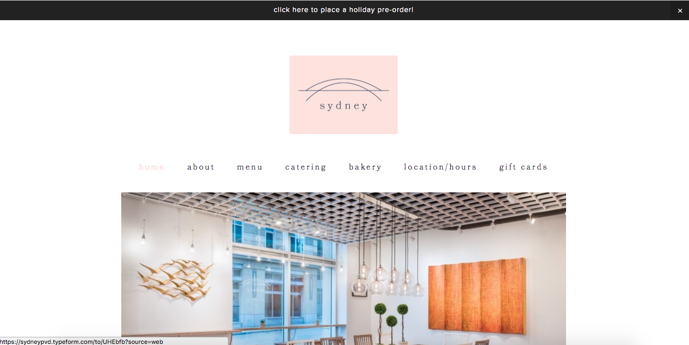

"Starbucks holds around 33 percent of the market share for coffee in the U.S. It sells almost as much coffee as do fast food and convenience stores combined, even though it the bulk of its consumers are in cities or upscale suburban areas. Starbucks has been able to gain such a large share of the market by catering specifically to a well-defined target audience.
Adults
Starbucks’ primary target market is men and women aged 25 to 40. They account for almost half (49 percent) of its total business. Starbucks’ appeal to this consumer age group through hip, contemporary design that is consistent in its advertising and decor, and working to keep its products current as status symbols. Customers tend to be urbanites with relatively high income, professional careers and a focus on social welfare. This target audience grows at a rate of 3 percent annually.
Young Adults
Young adults, aged 18 to 24, total 40 percent of Starbucks’ sales. Starbucks positions itself as a place college students can hang out, study, write term papers and meet people."
http://smallbusiness.chron.com/starbucks-target-audience-10553.html
